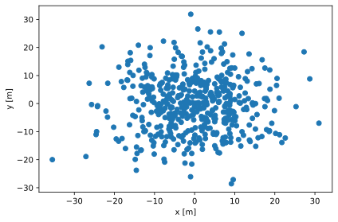
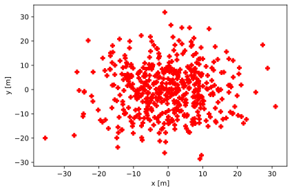
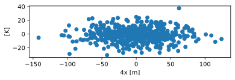
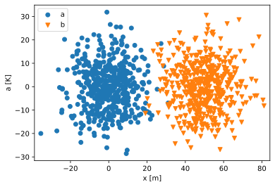
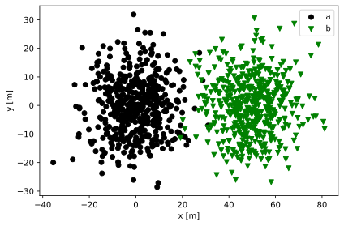
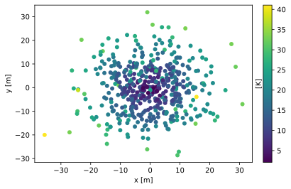
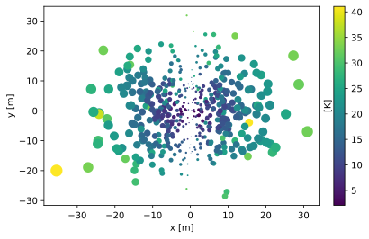
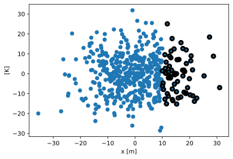

Scatter plot#
[1]:
import plopp as pp
import scipp as sc
Simple scatter plot#
[2]:
a = pp.data.scatter()
pp.scatter(a)
[2]:

Changing the style of the points can be done via
[3]:
pp.scatter(a, color='r', marker='P', size=120)
[3]:

Selecting which coordinates to use#
By default, the scatter plot will search for and use the 'x' coordinate in the input as abscissa values, and the 'y' coordinate as ordinate values.
This can however be customized by telling it which ones to use:
[4]:
a.coords['4x'] = a.coords['x'] * 4
print(a.coords.keys())
pp.scatter(a, x='4x', y='z', aspect='equal')
<scipp.Dict.keys {position, x, y, z, 4x}>
[4]:

Scatter plot with multiple inputs#
[5]:
a = pp.data.scatter()
b = pp.data.scatter(seed=2) * 10.0
b.coords['x'] += sc.scalar(50.0, unit='m')
pp.scatter({'a': a, 'b': b})
[5]:

Changing the style can be controlled for each input:
[6]:
pp.scatter({'a': a, 'b': b}, color={'a': 'k', 'b': 'g'})
[6]:

Scatter plot with a colorbar#
Requesting a colorbar when calling the scatter function will use the values inside the data array as colors:
[7]:
pp.scatter(a, cbar=True)
[7]:

Scatter plot with variable sizes#
We can use a coordinate of the input data array to represent the marker sizes by giving the name of the coordinate as the size argument.
[8]:
a = pp.data.scatter()
a.coords['s'] = sc.abs(a.coords['x']) * 5
pp.scatter(a, size='s', cbar=True, legend=False)
[8]:

Scatter plot with masks#
[9]:
a = pp.data.scatter()
a.masks['m'] = a.coords['x'] > sc.scalar(10, unit='m')
pp.scatter(a)
[9]:
